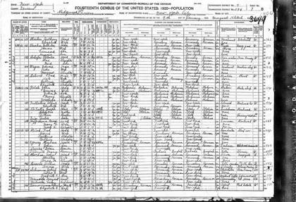
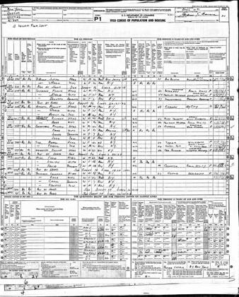

Evelyn’s second husband. An insurance clerk in Queens in 1940, he was married before.
- Born
- 24 March 1911, Brooklyn Confirmed
- Parents
- Nicholas and Anna (Abel) Deschner (1932 marriage index; the 1920 census lists him, aged 8, in their household) Probable
- First marriage
- Edna Durkes, 22 October 1932, Brooklyn (marriage index; license 13 October 1932; his 1950 census household still lists his wife Edna); how it ended is unknown Probable
- Married
- Evelyn Saydah (listed as Evelyn Zrake), 1971, in the marriage-license index; the certificate has not been seen Probable
- Died
- 10 September 2003, aged 92; last residence Fairfield, Connecticut (Social Security Death Index, a pointer only) Probable
Read the full story All the people
Documents about Leonard F. Deschner
 Document 128Evelyn Z. Deschner, paid death notice, 2001
Document 128Evelyn Z. Deschner, paid death notice, 2001
Documents page1920 census: Nicholas Deschner's household, Cornelia Street, Ridgewood (Leonard Deschner's family) Documents page1930 census: the Deschner household, 6079 60th Road, Queens (Leonard Deschner's family)Documents pageMarriage license index, Brooklyn, 13 Oct 1932: Leonard F Deschner and his brideDocuments pageFamilySearch marriage index: Leonard Deschner and his bride, 22 October 1932
Documents page1930 census: the Deschner household, 6079 60th Road, Queens (Leonard Deschner's family)Documents pageMarriage license index, Brooklyn, 13 Oct 1932: Leonard F Deschner and his brideDocuments pageFamilySearch marriage index: Leonard Deschner and his bride, 22 October 1932 Documents page1940 census: Leonard Deschner and his wife, Grandview Avenue, Queens (probably Evelyn's second husband)
Documents page1940 census: Leonard Deschner and his wife, Grandview Avenue, Queens (probably Evelyn's second husband) Documents pageLeonard Frank Deschner's World War II draft card, front and back, and index entry
Documents pageLeonard Frank Deschner's World War II draft card, front and back, and index entry
Documents page1950 census: Leonard Deschner and his wife, 65-23 70th Ave, Queens (probably Evelyn's second husband)Documents pageConnecticut death index: Leonard F Deschner, died 2003 (probably Evelyn's second husband)Documents pageSocial Security Death Index: Leonard F. Deschner, died 2003 (probably Evelyn's second husband)Documents pageMarriage license index, Manhattan, 1971: Evelyn Zrake and Leonard Deschner (Helen's sister)Each fact carries its label: Confirmed (shown in a record), Family (told to us) or Probable (fits but unproven). Living relatives are not listed.